Getting Started with SpNeigh
Jinming Cheng
Centre for Quantitative Medicine, Duke-NUS Medical School, Singapore, 169857, Singapore01 November, 2025
Source:vignettes/SpNeigh.Rmd
SpNeigh.RmdIntroduction
The SpNeigh package provides a flexible and interpretable framework for analyzing spatial neighborhoods in high-resolution spatial transcriptomics data. Designed with support for technologies such as 10x Xenium, Vizgen MERFISH, and 10x Visium HD, The SpNeigh facilitates a range of region-aware and distance-aware analyses. Key features include boundary detection, spatial weight calculation based on proximity to structural landmarks (e.g., region centroid or boundary), spatially-informed differential expression testing using spline-based modeling, and visualization of local cellular interactions.
By integrating spatial geometry with transcriptomic profiles, SpNeigh helps uncover biologically meaningful spatial patterns, such as boundary-enriched genes, spatial gradients, and intercellular interactions, enabling deeper insights into tissue organization and cellular communication.
This vignette demonstrates the key functionalities of the SpNeigh R package using a real 10x Xenium Fresh Frozen Mouse Brain Tiny Subset Dataset.
We show how to:
- Identify spatial boundaries and neighboring ring regions
- Explore spatial interaction patterns between clusters
- Perform different expression analysis between two cell populations
- Compute spatial weights from boundary or centroid proximity
- Perform spatial differential expression analysis along spatial gradients
- Perform spatial enrichment analysis along spatial gradients
This workflow highlights the analytical flexibility and biological insights enabled by SpNeigh.
Installation
The SpNeigh package can be installed from GitHub by using:
devtools::install_github("jinming-cheng/SpNeigh")Load packages and data
Coordinates of mouse brain dataset
coords <- readRDS(system.file("extdata", "MouseBrainCoords.rds",
package = "SpNeigh"
))
head(coords)
#> x y cell cluster
#> 1 1898.815 2540.963 1 4
#> 2 1895.305 2532.627 2 4
#> 3 2368.073 2534.409 3 2
#> 4 1903.726 2560.010 4 4
#> 5 1917.481 2543.132 5 4
#> 6 1926.540 2560.044 6 4Ensure the rownames of coords are the same with the cell
names
rownames(coords) <- coords$cellLog normalized expression data generated by
NormalizeData function in Seurat package
logNorm_expr <- readRDS(system.file("extdata", "LogNormExpr.rds",
package = "SpNeigh"
))
class(logNorm_expr)
#> [1] "dgCMatrix"
#> attr(,"package")
#> [1] "Matrix"Annotate clusters based on anatomical brain regions
new_cell_types <- c(
"0" = "Meninges",
"1" = "Cerebral_cortex",
"2" = "White_matter",
"3" = "Cerebral_cortex",
"4" = "Cerebral_cortex",
"5" = "Thalamus",
"6" = "Cerebral_cortex",
"7" = "Hippocampus",
"8" = "Hippocampus",
"9" = "Hippocampus",
"10" = "White_matter",
"11" = "Cerebral_cortex"
)In this vignette, we focus on cluster-level rather than cell type–level analyses.
Neighborhood analysis for cluster 2 cells
Detect spatial boundaries
Extract boundaries of cluster 2. Adjust the eps and
minPts parameters to refine the number of subregions
detected by the default dbscan clustering method.
bon_points_c2 <- GetBoundary(
data = coords,
one_cluster = 2,
eps = 120,
minPts = 10
)
table(bon_points_c2$region_id)
#>
#> 1 2
#> 572 132Add boundaries of cluster 2 to the spatial plot
PlotBoundary(coords, boundary = bon_points_c2)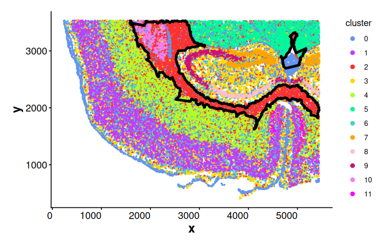
Plot boundary regions
bon_polys_c2 <- BuildBoundaryPoly(bon_points_c2)
PlotRegion(bon_polys_c2)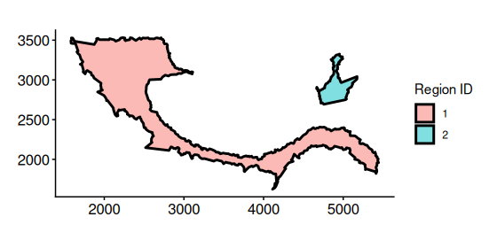
Obtain neighborhood ring regions
Get spatial ring-shaped regions by subtracting the original boundary
polygons from their corresponding outer buffered polygons. The
outer_boundary is automatically computed when it is not
supplied.
ring_regions <- GetRingRegion(boundary = bon_points_c2)Plot ring regions
PlotRegion(ring_regions)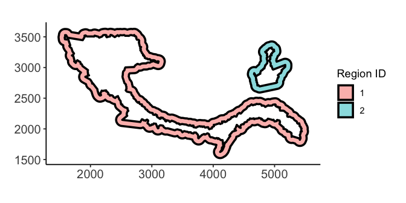
Statistics of cells inside rings
Get cells inside rings for cluster 2. (GetCellsInside()
takes a few seconds to run on this example, but may require several
minutes or longer for larger datasets.)
cells_ring <- GetCellsInside(data = coords, boundary = ring_regions)
cells_ring
#> Simple feature collection with 4362 features and 3 fields
#> Geometry type: POINT
#> Dimension: XY
#> Bounding box: xmin: 1482.997 ymin: 1530.545 xmax: 5441.679 ymax: 3532.463
#> CRS: NA
#> First 10 features:
#> cell cluster region_id geometry
#> 21 21 4 1 POINT (2080.017 2559.984)
#> 22 22 4 1 POINT (2088.025 2526.528)
#> 23 23 2 1 POINT (2085.119 2546.843)
#> 24 24 2 1 POINT (2101.906 2549.501)
#> 25 25 4 1 POINT (2102.112 2540.185)
#> 26 26 4 1 POINT (2089.812 2539.796)
#> 27 27 4 1 POINT (2095.253 2533.08)
#> 28 28 4 1 POINT (2100.02 2527.252)
#> 29 29 4 1 POINT (2197.507 2524.511)
#> 30 30 3 1 POINT (2209.931 2542.314)Plot cells inside rings
PlotCellsInside(cells_ring, point_size = 0.2)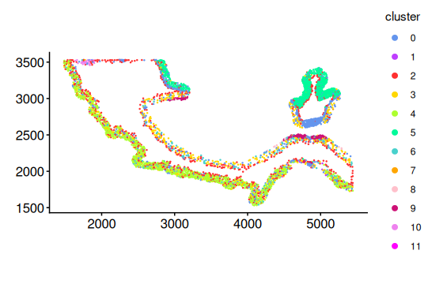
Obtain statistics of cells inside rings for cluster 2
stats_ring <- StatsCellsInside(cells_ring)Plot proportion of cells in different clusters for each sub region using bar plot.
PlotStatsBar(stats_ring, stat_column = "proportion")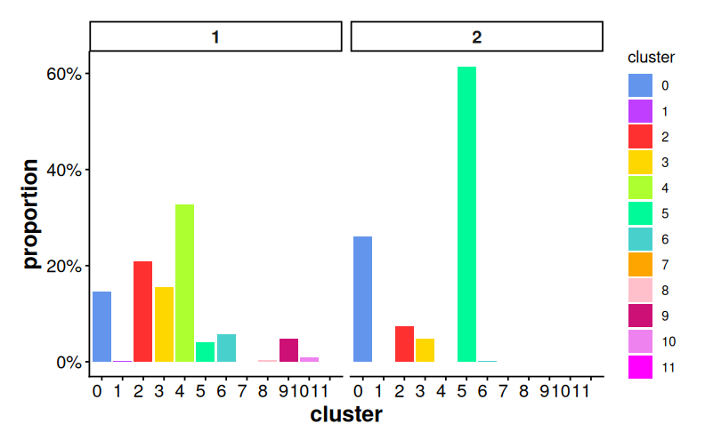
Plot proportion of cells in different clusters for each sub region
using donut chart. If plot_donut = FALSE, pie chart is
used.
PlotStatsPie(stats_ring, plot_donut = TRUE)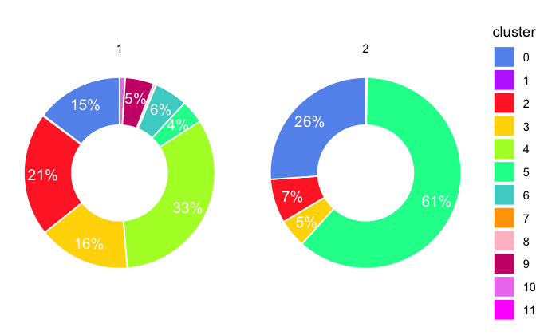
Neighborhood interaction of clusters inside rings
Compute neighborhood interaction matrix using K-nearest neighbors for cells inside rings
interaction_matrix <- ComputeSpatialInteractionMatrix(
subset(coords, cell %in% cells_ring$cell)
)
interaction_matrix
#> 0 1 2 3 4 5 6 7 8 9 10 11
#> 0 4090 6 1020 892 882 706 202 6 15 95 46 0
#> 1 6 0 10 10 11 0 3 0 0 0 0 0
#> 2 1266 10 1831 1127 1882 648 392 2 0 49 72 1
#> 3 980 8 973 1409 1190 104 422 3 28 187 13 3
#> 4 859 3 1685 1185 5684 0 392 0 0 0 0 2
#> 5 768 0 501 91 0 8227 10 0 0 3 0 0
#> 6 199 1 331 442 411 12 193 0 14 99 6 2
#> 7 7 0 3 9 0 0 0 0 0 1 0 0
#> 8 20 0 5 43 0 0 20 0 29 13 0 0
#> 9 108 0 39 158 0 1 79 0 11 1064 0 0
#> 10 43 0 64 12 1 0 5 0 0 0 155 0
#> 11 0 0 1 3 4 0 2 0 0 0 0 0Heatmap of a row-scaled interaction matrix for cells inside rings for cluster 2. The heatmap reveals that clusters 2, 3, and 4 are spatially adjacent to one another.
PlotInteractionMatrix(interaction_matrix)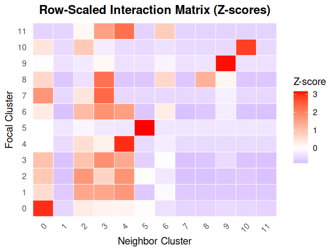
The plot of cells inside rings split by clusters further confirms the co-occurrence of clusters 2, 3, 4 in ring region 1.
PlotCellsInside(cells_ring) +
facet_wrap(~cluster) +
Seurat::RotatedAxis() +
AddBoundaryPoly(ring_regions, linewidth_boundary = 0.1)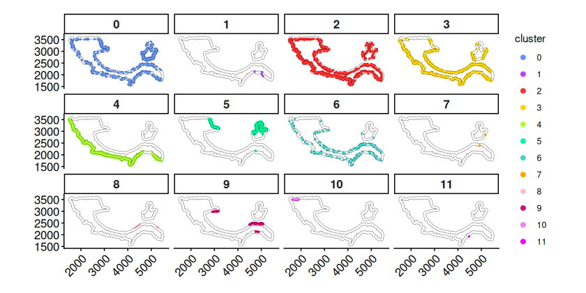
DE analysis of cluster 2 cells inside and outside boundaries
Most cells in cluster 2 are located in sub region 1. Hence, we focus on the DE analysis between cluster 2 cells inside boundary of sub region 1 and cells in the outside neighboring ring region 1.
Get cells inside the boundaries of cluster 2
cells_inside <- GetCellsInside(data = coords, boundary = bon_points_c2)
cells_inside
#> Simple feature collection with 5073 features and 3 fields
#> Geometry type: POINT
#> Dimension: XY
#> Bounding box: xmin: 1590.613 ymin: 1640.136 xmax: 5443.607 ymax: 3531.379
#> CRS: NA
#> First 10 features:
#> cell cluster region_id geometry
#> 3 3 2 1 POINT (2368.073 2534.409)
#> 20 20 2 1 POINT (2456.959 2560.494)
#> 31 31 2 1 POINT (2152.998 2554.538)
#> 43 43 2 1 POINT (2312.183 2555.867)
#> 44 44 2 1 POINT (2323.21 2551.805)
#> 50 50 2 1 POINT (2356.391 2544.839)
#> 52 52 2 1 POINT (2387.844 2537.827)
#> 53 53 2 1 POINT (2401.216 2526.458)
#> 54 54 2 1 POINT (2392.535 2555.696)
#> 55 55 2 1 POINT (2407.538 2545.443)Obtain cluster 2 cells inside and outside boundary of sub region
cells_in <- subset(cells_inside, region_id == 1 & cluster == 2)[["cell"]]
cells_out <- subset(cells_ring, region_id == 1 & cluster == 2)[["cell"]]Perform DE analysis between cells inside boundary and outside
boundary using the limma framewrok (lmFit +
eBayes)
tab <- RunLimmaDE(
exp_mat = logNorm_expr,
min.pct = 0.25,
cells_reference = cells_in,
cells_target = cells_out
)Top DE genes between cells outside boundary and cells inside
boundary. The DE genes are ordered by the abstract value of
logFC by default.
head(tab[, c("gene", "logFC", "adj.P.Val", "pct.reference", "pct.target")])
#> gene logFC adj.P.Val pct.reference pct.target
#> Slc17a7 Slc17a7 2.719412 1.624032e-145 0.3228372 0.7555911
#> Cabp7 Cabp7 2.256859 1.316819e-126 0.2325064 0.6453674
#> Arc Arc 1.932350 7.188753e-73 0.4567430 0.7779553
#> Neurod6 Neurod6 1.788980 5.267216e-123 0.1224555 0.5063898
#> Igfbp4 Igfbp4 1.608183 8.429609e-96 0.1437659 0.4952077
#> Nrn1 Nrn1 1.590518 4.942213e-65 0.2722646 0.5926518Set a random seed to make PlotExpression results reproducible
set.seed(123)Expression of top DE genes in cluster 2 cells outside boundary. The
cells are plotted randomly using the given seed when
shuffle = TRUE. If shuffle = FALSE, cells with
higher expression values are plotted last (on the top).
PlotExpression(
data = coords[colnames(logNorm_expr), ],
exp_mat = logNorm_expr,
genes = tab$gene[1:2],
sub_plot = TRUE,
one_cluster = 2,
shuffle = TRUE,
point_size = 0.1,
angle_x_label = 45
)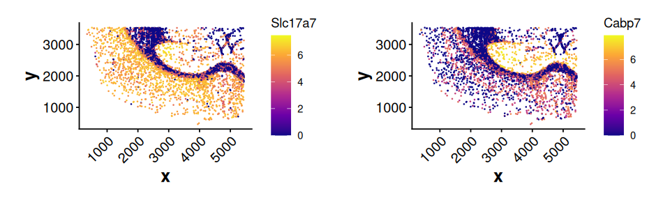
Expression of Slc17a7 for cluster 2 cells inside and outside boundary of sub region 1. Cluster 2 cells outside the boundary show much higher expression of Slc17a7.
PlotExpression(
data = coords[colnames(logNorm_expr), ],
exp_mat = logNorm_expr,
genes = "Slc17a7",
sub_plot = TRUE,
shuffle = TRUE,
sub_cells = c(cells_in, cells_out),
point_size = 0.3
) +
AddBoundaryPoly(bon_polys_c2[1, ], linewidth_boundary = 0.5)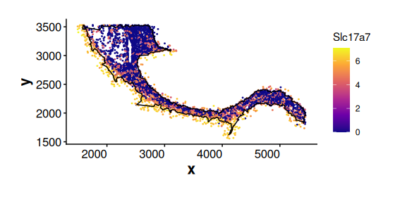
Expression of a general marker gene Sox10 for Oligodendrocytes (cluster 2 cells). Sox10 is expressed in both cluster 2 cells inside and outside the boundary. This suggests that cluster 2 cells located near the boundary may represent intermediate cell states.
PlotExpression(
data = coords[colnames(logNorm_expr), ],
exp_mat = logNorm_expr,
sub_cells = c(cells_in, cells_out),
sub_plot = TRUE,
genes = "Sox10",
shuffle = TRUE,
point_size = 0.3
) +
AddBoundaryPoly(bon_polys_c2[1, ], linewidth_boundary = 0.5)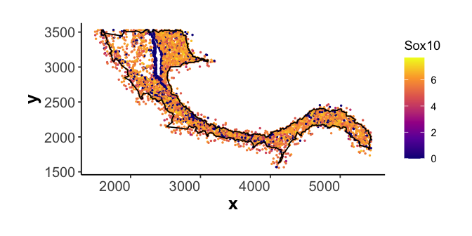
Spatial DE analysis of cells in cluster 0 along spatial weights
Detect spatial boundaries
Obtain cells in cluster 0
cells_c0 <- subset(coords, cluster == 0)[, "cell"]Plot cluster 0 cells without boundary
PlotBoundary(coords[cells_c0, ])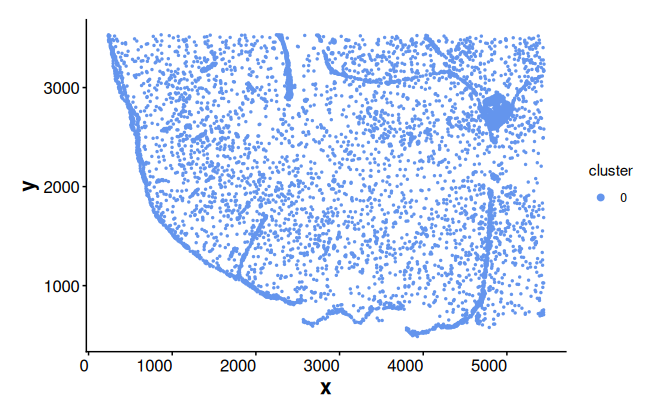
Get boundaries of cluster 0
bon_points_c0 <- GetBoundary(data = coords, one_cluster = 0)
bon_polys_c0 <- BuildBoundaryPoly(bon_points_c0)Plot boundary edges for cluster 0
PlotEdge(boundary_poly = bon_polys_c0, linewidth_boundary = 0.6)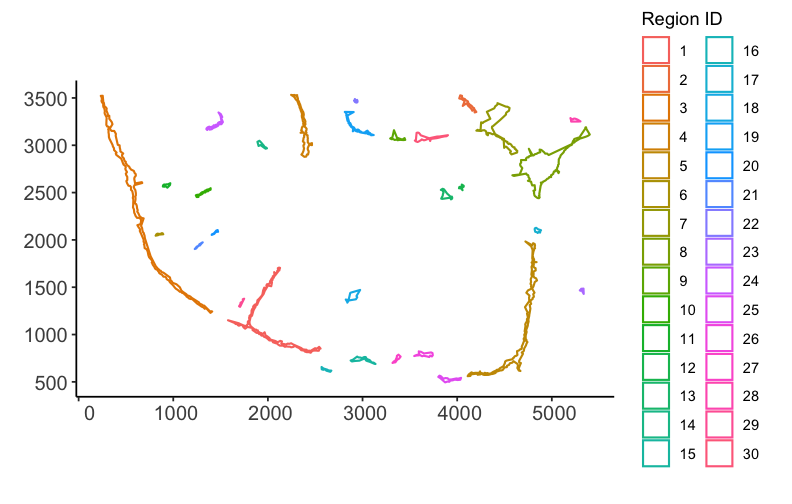
Compute and plot spatial weights
Compute spatial weights based on the distance to boundaries
weights_bon <- ComputeBoundaryWeights(
data = coords,
cell_ids = cells_c0,
boundary = bon_points_c0
)Spatial weights are a named vector, where names correspond to cell IDs
weights_bon[1:3]
#> 39 42 75
#> 0.7016421 0.6955660 0.6805249Alternatively, compute spatial weights based on the distance to centroids
weights_cen <- ComputeCentroidWeights(data = coords, cell_ids = cells_c0)Plot boundary weights
PlotWeights(data = coords, weights = weights_bon, point_size = 0.8) +
labs(title = "Boundary weights")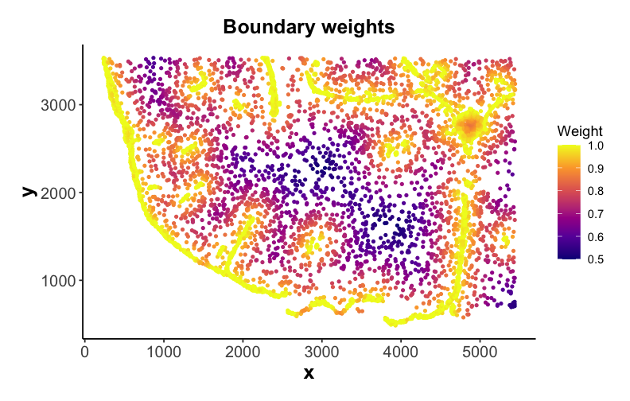
Perform spatial differential analysis along boundary weights
Run spatial DE analysis for cluster 0 cells along boundary weights using splines
tab_sp <- RunSpatialDE(
exp_mat = logNorm_expr[, cells_c0],
spatial_distance = weights_bon,
cell_ids = cells_c0
)Top DE genes along boundary weights. The first spline coefficient
(Z1) captures the main expression trend along the spatial
distance. A positive value indicates increasing expression with
distance, while a negative value indicates decreasing expression.
head(tab_sp)
#> Z1 Z2 Z3 AveExpr F P.Value adj.P.Val
#> Aldh1a2 90.19564 -72.83701 18.56803 1.642933 1156.7476 0 0
#> Car4 -86.85851 37.72830 -30.91311 3.007433 590.8437 0 0
#> Col1a1 84.54759 -60.30661 21.47013 1.675953 885.1705 0 0
#> Dcn 112.15109 -72.28618 28.47200 2.337544 1295.7527 0 0
#> Fmod 91.46180 -63.54536 20.99449 1.562370 1083.7186 0 0
#> Gjb2 67.07620 -52.43818 14.55533 1.193263 742.6493 0 0
#> gene trend
#> Aldh1a2 Aldh1a2 Positive
#> Car4 Car4 Negative
#> Col1a1 Col1a1 Positive
#> Dcn Dcn Positive
#> Fmod Fmod Positive
#> Gjb2 Gjb2 PositiveExpression of top DE genes along boundary weights
PlotExpression(
data = coords[colnames(logNorm_expr), ],
exp_mat = logNorm_expr,
genes = tab_sp$gene[1:2],
sub_plot = TRUE,
one_cluster = 0,
shuffle = TRUE,
point_size = 0.1,
angle_x_label = 45
)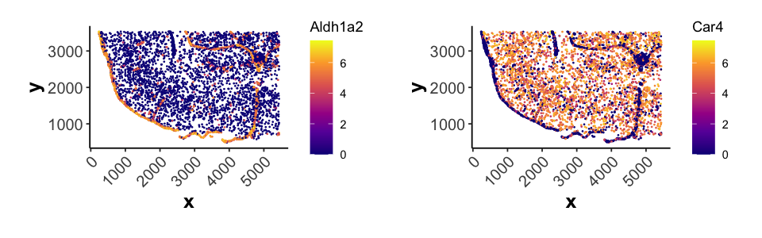
Plot scaled average expression along boundary weight bins for top 10 spatial DE genes. The scaled average expression ranges from 0 to 1 by using min-max normalization method.
PlotSpatialExpression(
exp_mat = logNorm_expr[, cells_c0],
spatial_distance = weights_bon,
scale_method = "minmax",
genes = tab_sp$gene[1:10],
label_x = "Boundary weights"
)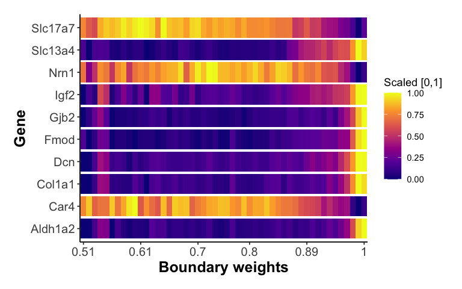
Spatial enrichment analysis for each gene
Compute spatial enrichment index (SEI) for each gene based on
boundary weights. The SEI reflects the extent to which gene expression
is enriched in spatially weighted regions. The result is sorted in
descending order by normalized_SEI.
SEI_bon <- ComputeSpatialEnrichmentIndex(
exp_mat = logNorm_expr[, cells_c0],
weights = weights_bon
)
head(SEI_bon)
#> gene SEI mean_expr normalized_SEI
#> 1 Fmod 1.742086 1.562370 1.115027
#> 2 Gjb2 1.325063 1.193263 1.110452
#> 3 Aldh1a2 1.820161 1.642933 1.107872
#> 4 Slc13a4 2.106610 1.906511 1.104955
#> 5 Col1a1 1.842083 1.675953 1.099125
#> 6 Cyp1b1 1.495145 1.365958 1.094575Expression of top genes enriched near boundaries
PlotExpression(
data = coords[colnames(logNorm_expr), ],
exp_mat = logNorm_expr,
genes = SEI_bon$gene[1:2],
sub_plot = TRUE,
one_cluster = 0,
shuffle = TRUE,
point_size = 0.1,
angle_x_label = 45
)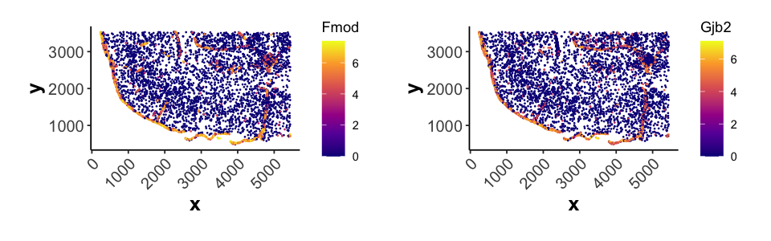
Session Info
sessionInfo()
#> R version 4.4.1 (2024-06-14)
#> Platform: aarch64-apple-darwin20
#> Running under: macOS 15.6.1
#>
#> Matrix products: default
#> BLAS: /Library/Frameworks/R.framework/Versions/4.4-arm64/Resources/lib/libRblas.0.dylib
#> LAPACK: /Library/Frameworks/R.framework/Versions/4.4-arm64/Resources/lib/libRlapack.dylib; LAPACK version 3.12.0
#>
#> locale:
#> [1] en_US.UTF-8/en_US.UTF-8/en_US.UTF-8/C/en_US.UTF-8/en_US.UTF-8
#>
#> time zone: Asia/Singapore
#> tzcode source: internal
#>
#> attached base packages:
#> [1] stats graphics grDevices utils datasets methods base
#>
#> other attached packages:
#> [1] ggplot2_3.5.1 SpNeigh_0.9.1 BiocStyle_2.34.0
#>
#> loaded via a namespace (and not attached):
#> [1] RColorBrewer_1.1-3 rstudioapi_0.17.1 jsonlite_1.8.9
#> [4] magrittr_2.0.3 spatstat.utils_3.1-0 farver_2.1.2
#> [7] rmarkdown_2.29 fs_1.6.5 ragg_1.3.3
#> [10] vctrs_0.6.5 ROCR_1.0-11 spatstat.explore_3.3-3
#> [13] htmltools_0.5.8.1 curl_5.2.3 sass_0.4.9
#> [16] sctransform_0.4.1 parallelly_1.38.0 KernSmooth_2.23-24
#> [19] bslib_0.8.0 htmlwidgets_1.6.4 desc_1.4.3
#> [22] ica_1.0-3 plyr_1.8.9 plotly_4.10.4
#> [25] zoo_1.8-12 cachem_1.1.0 igraph_2.1.1
#> [28] mime_0.12 lifecycle_1.0.4 pkgconfig_2.0.3
#> [31] Matrix_1.7-1 R6_2.5.1 fastmap_1.2.0
#> [34] fitdistrplus_1.2-1 future_1.34.0 shiny_1.9.1
#> [37] digest_0.6.37 colorspace_2.1-1 patchwork_1.3.0
#> [40] tensor_1.5 Seurat_5.1.0 RSpectra_0.16-2
#> [43] irlba_2.3.5.1 textshaping_0.4.0 labeling_0.4.3
#> [46] progressr_0.15.0 spatstat.sparse_3.1-0 polyclip_1.10-7
#> [49] httr_1.4.7 abind_1.4-8 compiler_4.4.1
#> [52] proxy_0.4-27 withr_3.0.2 DBI_1.2.3
#> [55] fastDummies_1.7.4 highr_0.11 MASS_7.3-61
#> [58] concaveman_1.1.0 classInt_0.4-10 tools_4.4.1
#> [61] units_0.8-5 lmtest_0.9-40 httpuv_1.6.15
#> [64] future.apply_1.11.3 goftest_1.2-3 glue_1.8.0
#> [67] dbscan_1.2.2 nlme_3.1-166 promises_1.3.0
#> [70] grid_4.4.1 sf_1.0-18 Rtsne_0.17
#> [73] cluster_2.1.6 reshape2_1.4.4 generics_0.1.3
#> [76] gtable_0.3.6 spatstat.data_3.1-2 class_7.3-22
#> [79] tidyr_1.3.1 data.table_1.16.2 sp_2.1-4
#> [82] spatstat.geom_3.3-3 RcppAnnoy_0.0.22 ggrepel_0.9.6
#> [85] RANN_2.6.2 pillar_1.11.1 stringr_1.5.1
#> [88] limma_3.61.12 spam_2.11-0 RcppHNSW_0.6.0
#> [91] later_1.3.2 splines_4.4.1 dplyr_1.1.4
#> [94] lattice_0.22-6 deldir_2.0-4 survival_3.7-0
#> [97] FNN_1.1.4.1 tidyselect_1.2.1 miniUI_0.1.1.1
#> [100] pbapply_1.7-2 knitr_1.48 gridExtra_2.3
#> [103] V8_6.0.2 bookdown_0.42 scattermore_1.2
#> [106] xfun_0.49 statmod_1.5.0 matrixStats_1.4.1
#> [109] stringi_1.8.4 lazyeval_0.2.2 yaml_2.3.10
#> [112] evaluate_1.0.1 codetools_0.2-20 tibble_3.2.1
#> [115] BiocManager_1.30.25 cli_3.6.5 uwot_0.2.2
#> [118] xtable_1.8-4 reticulate_1.43.0 systemfonts_1.1.0
#> [121] munsell_0.5.1 jquerylib_0.1.4 Rcpp_1.1.0
#> [124] spatstat.random_3.3-2 globals_0.16.3 png_0.1-8
#> [127] spatstat.univar_3.0-1 parallel_4.4.1 pkgdown_2.1.1
#> [130] dotCall64_1.2 listenv_0.9.1 viridisLite_0.4.2
#> [133] scales_1.3.0 e1071_1.7-16 ggridges_0.5.6
#> [136] SeuratObject_5.0.2 leiden_0.4.3.1 purrr_1.0.2
#> [139] rlang_1.1.6 cowplot_1.1.3